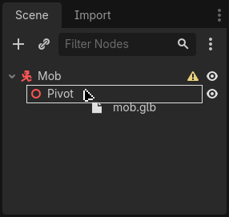
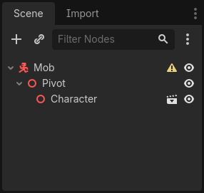
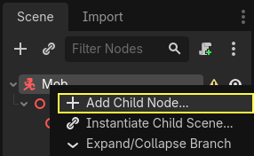
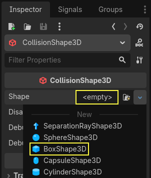
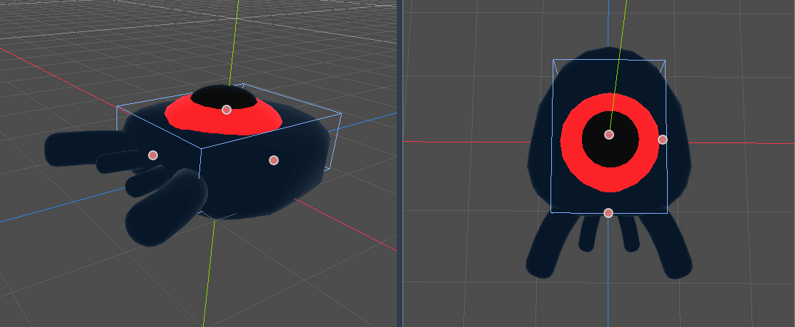
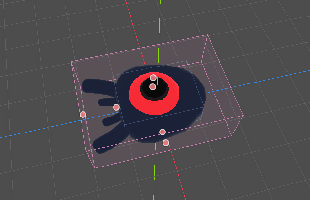
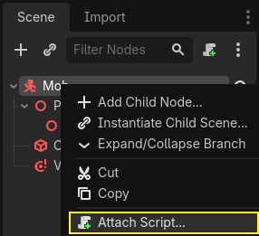
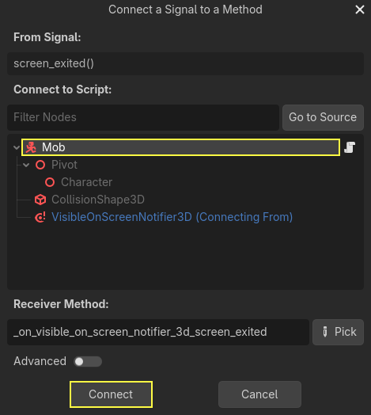

Designing the mob scene
In this part, you're going to code the monsters, which we'll call mobs. In the next lesson, we'll spawn them randomly around the playable area.
Let's design the monsters themselves in a new scene. The node structure is going
to be similar to the player.tscn scene.
Create a scene with, once again, a CharacterBody3D node as its root. Name it
Mob. Add a child node Node3D, name it Pivot. And drag and drop
the file mob.glb from the FileSystem dock onto the Pivot to add the
monster's 3D model to the scene.

You can rename the newly created mob node
into Character.

We need a collision shape for our body to work. Right-click on the Mob node,
the scene's root, and click Add Child Node.

Add a CollisionShape3D.

In the Inspector, assign a BoxShape3D to the Shape property.

We should change its size to fit the 3D model better. You can do so interactively by clicking and dragging on the orange dots.
The box should touch the floor and be a little thinner than the model. Physics engines work in such a way that if the player's sphere touches even the box's corner, a collision will occur. If the box is a little too big compared to the 3D model, you may die at a distance from the monster, and the game will feel unfair to the players.

Notice that my box is taller than the monster. It is okay in this game because we're looking at the scene from above and using a fixed perspective. Collision shapes don't have to match the model exactly. It's the way the game feels when you test it that should dictate their form and size.
Removing monsters off-screen
We're going to spawn monsters at regular time intervals in the game level. If we're not careful, their count could increase to infinity, and we don't want that. Each mob instance has both a memory and a processing cost, and we don't want to pay for it when the mob is outside the screen.
Once a monster leaves the screen, we don't need it anymore, so we should delete it. Godot has a node that detects when objects leave the screen, VisibleOnScreenNotifier3D, and we're going to use it to destroy our mobs.
Note
When you keep instancing an object, there's a technique you can use to avoid the cost of creating and destroying instances all the time called pooling. It consists of pre-creating an array of objects and reusing them over and over.
When working with GDScript, this usually isn't needed. The main reason to use pools is to avoid freezes with garbage-collected languages like C# or Lua. GDScript uses a different technique to manage memory, reference counting, which doesn't have that caveat. You can learn more about that here: Memory management.
Select the Mob node and add a child node VisibleOnScreenNotifier3D. Another
box, pink this time, appears. When this box completely leaves the screen, the
node will emit a signal.

Resize it using the orange dots until it covers the entire 3D model.

Coding the mob's movement
Let's implement the monster's motion. We're going to do this in two steps.
First, we'll write a script on the Mob that defines a function to initialize
the monster. We'll then code the randomized spawn mechanism in the main.tscn scene
and call the function from there.
Attach a script to the Mob.

Here's the movement code to start with. We define two properties, min_speed
and max_speed, to define a random speed range, which we will later use to define CharacterBody3D.velocity.
extends CharacterBody3D
# Minimum speed of the mob in meters per second.
@export var min_speed = 10.0
# Maximum speed of the mob in meters per second.
@export var max_speed = 18.0
func _physics_process(_delta):
move_and_slide()
using Godot;
public partial class Mob : CharacterBody3D
{
// Don't forget to rebuild the project so the editor knows about the new export variable.
// Minimum speed of the mob in meters per second
[Export]
public float MinSpeed { get; set; } = 10.0f;
// Maximum speed of the mob in meters per second
[Export]
public float MaxSpeed { get; set; } = 18.0f;
public override void _PhysicsProcess(double delta)
{
MoveAndSlide();
}
}
Similarly to the player, we move the mob every frame by calling the function
CharacterBody3D.move_and_slide(). This time, we don't update
the velocity every frame; we want the monster to move at a constant speed
and leave the screen, even if it were to hit an obstacle.
We need to define another function to calculate the CharacterBody3D.velocity. This
function will turn the monster towards the player and randomize both its angle
of motion and its velocity.
The function will take a start_position,the mob's spawn position, and the
player_position as its arguments.
We position the mob at start_position and turn it towards the player using
the look_at_from_position() method, and randomize the angle by rotating a
random amount around the Y axis. Below, randf_range() outputs a random value
between -PI / 4 radians and PI / 4 radians.
# This function will be called from the Main scene.
func initialize(start_position, player_position):
# We position the mob by placing it at start_position
# and rotate it towards player_position, so it looks at the player.
look_at_from_position(start_position, player_position, Vector3.UP)
# Rotate this mob randomly within range of -45 and +45 degrees,
# so that it doesn't move directly towards the player.
rotate_y(randf_range(-PI / 4, PI / 4))
// This function will be called from the Main scene.
public void Initialize(Vector3 startPosition, Vector3 playerPosition)
{
// We position the mob by placing it at startPosition
// and rotate it towards playerPosition, so it looks at the player.
LookAtFromPosition(startPosition, playerPosition, Vector3.Up);
// Rotate this mob randomly within range of -45 and +45 degrees,
// so that it doesn't move directly towards the player.
RotateY((float)GD.RandRange(-Mathf.Pi / 4.0, Mathf.Pi / 4.0));
}
We got a random position, now we need a random_speed. randf_range() will be useful as it gives random float values, and we will use min_speed and max_speed.
random_speed is just an float, and we just use it to multiply our CharacterBody3D.velocity. After random_speed is applied, we rotate CharacterBody3D.velocity Vector3 towards the player.
func initialize(start_position, player_position):
# ...
# We calculate a random speed (float)
var random_speed = randf_range(min_speed, max_speed)
# We calculate a forward velocity that represents the speed.
velocity = Vector3.FORWARD * random_speed
# We then rotate the velocity vector based on the mob's Y rotation
# in order to move in the direction the mob is looking.
velocity = velocity.rotated(Vector3.UP, rotation.y)
public void Initialize(Vector3 startPosition, Vector3 playerPosition)
{
// ...
// We calculate a random speed (float).
float randomSpeed = GD.RandRange(MinSpeed, MaxSpeed);
// We calculate a forward velocity that represents the speed.
Velocity = Vector3.Forward * randomSpeed;
// We then rotate the velocity vector based on the mob's Y rotation
// in order to move in the direction the mob is looking.
Velocity = Velocity.Rotated(Vector3.Up, Rotation.Y);
}
Leaving the screen
We still have to destroy the mobs when they leave the screen. To do so, we'll
connect our VisibleOnScreenNotifier3D node's screen_exited signal to the Mob.
Select the VisibleOnScreenNotifier3D node and on the right side of the interface,
navigate to the Signals dock. Double-click the screen_exited() signal.

Connect the signal to the Mob

This will add a new function for you in your mob script,
_on_visible_on_screen_notifier_3d_screen_exited(). From it, call the queue_free()
method. This function destroys the instance it's called on.
func _on_visible_on_screen_notifier_3d_screen_exited():
queue_free()
// We also specified this function name in PascalCase in the editor's connection window.
private void OnVisibilityNotifierScreenExited()
{
QueueFree();
}
Our monster is ready to enter the game! In the next part, you will spawn monsters in the game level.
Here is the complete mob.gd script for reference.
extends CharacterBody3D
# Minimum speed of the mob in meters per second.
@export var min_speed = 10.0
# Maximum speed of the mob in meters per second.
@export var max_speed = 18.0
func _physics_process(_delta):
move_and_slide()
# This function will be called from the Main scene.
func initialize(start_position, player_position):
# We position the mob by placing it at start_position
# and rotate it towards player_position, so it looks at the player.
look_at_from_position(start_position, player_position, Vector3.UP)
# Rotate this mob randomly within range of -45 and +45 degrees,
# so that it doesn't move directly towards the player.
rotate_y(randf_range(-PI / 4, PI / 4))
# We calculate a random speed (float)
var random_speed = randf_range(min_speed, max_speed)
# We calculate a forward velocity that represents the speed.
velocity = Vector3.FORWARD * random_speed
# We then rotate the velocity vector based on the mob's Y rotation
# in order to move in the direction the mob is looking.
velocity = velocity.rotated(Vector3.UP, rotation.y)
func _on_visible_on_screen_notifier_3d_screen_exited():
queue_free()
using Godot;
public partial class Mob : CharacterBody3D
{
// Minimum speed of the mob in meters per second.
[Export]
public float MinSpeed { get; set; } = 10.0f;
// Maximum speed of the mob in meters per second.
[Export]
public float MaxSpeed { get; set; } = 18.0f;
public override void _PhysicsProcess(double delta)
{
MoveAndSlide();
}
// This function will be called from the Main scene.
public void Initialize(Vector3 startPosition, Vector3 playerPosition)
{
// We position the mob by placing it at startPosition
// and rotate it towards playerPosition, so it looks at the player.
LookAtFromPosition(startPosition, playerPosition, Vector3.Up);
// Rotate this mob randomly within range of -45 and +45 degrees,
// so that it doesn't move directly towards the player.
RotateY((float)GD.RandRange(-Mathf.Pi / 4.0, Mathf.Pi / 4.0));
// We calculate a random speed (float).
float randomSpeed = GD.RandRange(MinSpeed, MaxSpeed);
// We calculate a forward velocity that represents the speed.
Velocity = Vector3.Forward * randomSpeed;
// We then rotate the velocity vector based on the mob's Y rotation
// in order to move in the direction the mob is looking.
Velocity = Velocity.Rotated(Vector3.Up, Rotation.Y);
}
// We also specified this function name in PascalCase in the editor's connection window.
private void OnVisibilityNotifierScreenExited()
{
QueueFree();
}
}